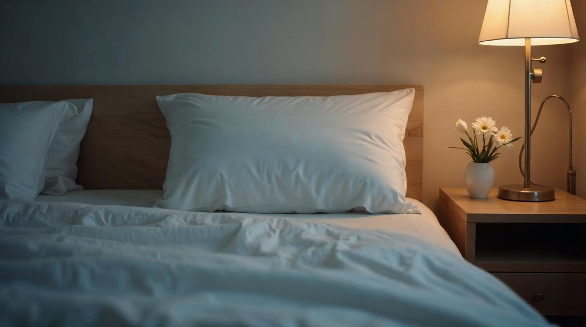
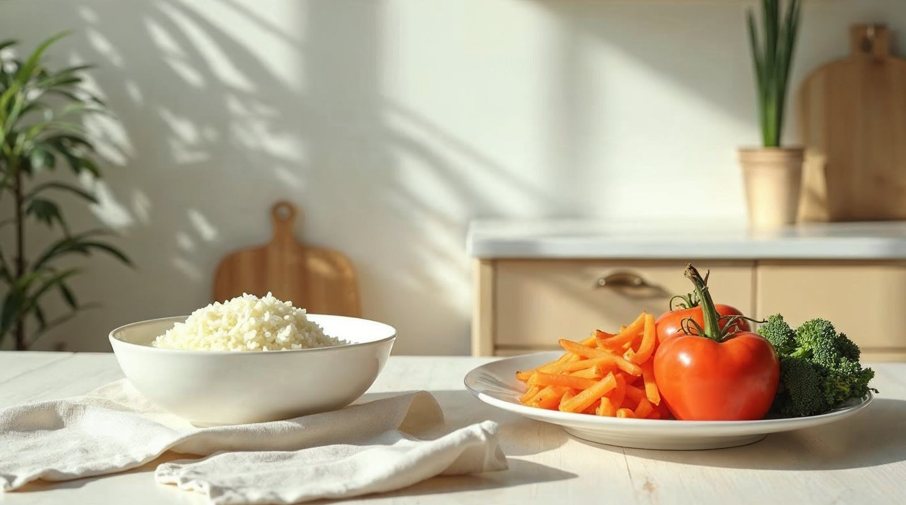
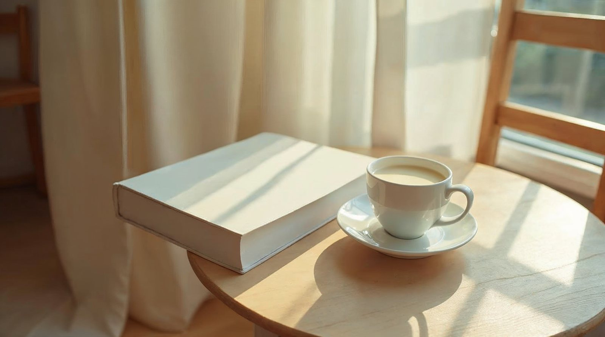
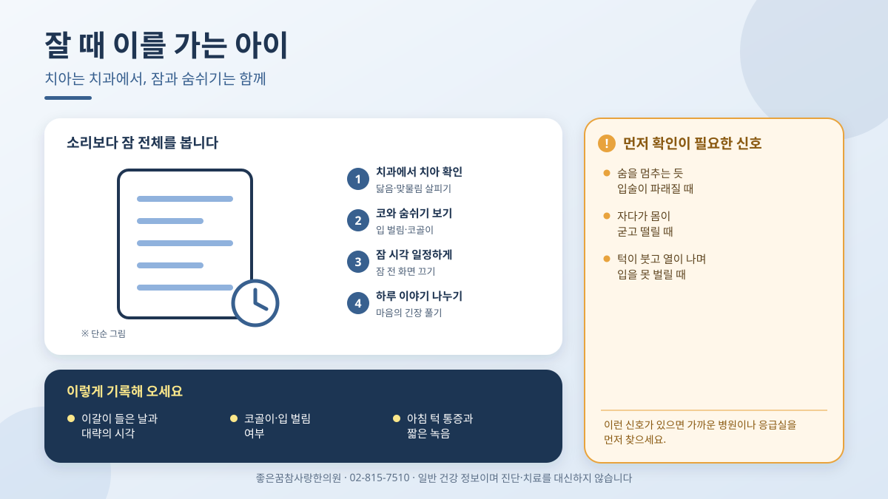

이종호 한의사 감수좋은꿈참사랑한의원 대표원장 (한의사 면허번호 19769)발행 2026-11-26 · 수정 2026-11-27
이 글의 차례
밤늦게 아이 방 문을 살짝 열었는데 '뽀드득, 뽀드득' 하는 소리가 들려요. 처음엔 무슨 소리인가 싶어 귀를 기울이다가, 아이가 잠든 채 이를 갈고 있다는 걸 알고 깜짝 놀라시죠. 작은 턱으로 저렇게 세게 갈다가 이가 상하지는 않을까, 어디가 불편한 건 아닐까 걱정이 밀려옵니다.
진료실에서 아이 이갈이 얘기를 꺼내시는 부모님이 꽤 많아요. 대개 잠 문제나 코막힘 때문에 오셨다가 "그리고 애가 밤에 이를 갈아요" 하고 덧붙이세요. 배 속에 벌레가 있어서 그렇다는 말을 듣고 걱정하며 오시는 분도 계시고요.
먼저 안심하셔도 될 얘기부터 드릴게요. 아이의 이갈이는 생각보다 흔하고, 많은 경우 자라면서 줄어들어요. 젖니가 빠지고 새 이가 나는 동안에는 턱이 위아래 이가 맞물리는 자리를 찾느라 더 그러기도 하거든요. 원래 그런 시기가 있는 거예요.
그러니까 사실은 '이를 가는 소리'와 '아이가 잘 자는지'는 나눠서 보셔야 해요. 소리는 커도 깊이 잘 자는 아이가 있고, 소리는 작아도 숨쉬기가 불편한 아이가 있거든요. 그래서 그냥 지나치기보다 아이 잠과 치아, 코와 숨쉬기, 마음의 긴장을 한 번 함께 살펴보면 좋아요. 이 글에서는 그 순서를 차근차근 정리해 볼게요.

아이 이갈이는 어떤 모습인가요
이갈이는 잠자는 동안 위아래 이를 맞대고 갈거나 꽉 무는 것을 말합니다. 아이 이갈이는 대개 소리가 크게 나서 부모가 먼저 알아차립니다. 아이 본인은 대부분 모르고, 아침에 일어나서도 아무렇지 않게 지냅니다.
젖니가 나는 시기, 그리고 젖니가 빠지고 영구치가 나는 시기에 특히 많이 보입니다. 위아래 이가 새로 맞물리는 과정에서 턱이 자리를 찾느라 이를 맞대어 보는 것이라고 설명하기도 합니다. 그래서 이 시기의 이갈이는 자라는 과정의 일부로 보는 경우가 많습니다.
다만 아침마다 턱이 아프다거나, 입을 크게 벌리기 힘들다거나, 이가 시리다고 한다면 조금 더 살펴봐야 합니다. 이가 눈에 띄게 닳아 있거나 깨진 곳이 있는지도 치과에서 확인받는 것이 좋습니다.
왜 아이는 자면서 이를 갈까요
첫째, 치아와 턱이 자라는 과정입니다. 젖니와 영구치가 섞여 있는 시기에는 위아래 이의 맞물림이 자주 달라집니다. 턱이 새로운 자리를 찾는 동안 잠결에 이를 맞대고 가는 모습이 나타날 수 있습니다.
둘째, 잠을 흔드는 원인입니다. 코가 막히거나 편도와 아데노이드가 커서 입으로 숨을 쉬고 코를 고는 아이는 잠이 자주 얕아집니다. 잠이 얕아지는 순간에 이갈이가 함께 나타나기 쉽습니다. 그래서 이를 가는 아이가 코를 골고 입을 벌리고 잔다면 숨쉬기를 먼저 살펴볼 필요가 있습니다.
셋째, 긴장과 피로입니다. 새 학기, 시험, 친구 관계처럼 마음이 쓰이는 일이 있거나, 낮에 너무 흥분하고 피곤했던 날 이갈이가 심해지는 아이가 있습니다. 낮 동안 쌓인 긴장이 잠결에 턱의 힘으로 나타난다고 보기도 합니다.
넷째, 잠 습관입니다. 잠드는 시각이 들쭉날쭉하거나, 잠들기 직전까지 영상을 보거나, 늦은 밤 단 간식이나 음료를 먹는 습관이 있으면 잠이 깊어지기 어렵습니다.
이갈이를 배 속 기생충 때문이라고 여기는 이야기가 예부터 전해 오지만, 이갈이만으로 기생충을 의심하지는 않습니다. 걱정이 된다면 소아청소년과에서 상의하시면 됩니다. 한의학에서는 이갈이를 긴장이 쌓이고 열이 위로 오르는 모습과 함께 살펴 왔는데, 이것은 아이 상태를 관찰하는 오래된 설명이지 진단명은 아닙니다.
어른 이갈이와는 무엇이 다를까요
어른 이갈이는 오랜 긴장과 습관이 쌓여 턱관절 통증, 두통, 치아 손상으로 이어지는 경우가 많아 적극적으로 관리하는 편입니다. 반면 아이 이갈이는 치아와 턱이 자라는 과정과 겹쳐 있어 시간이 지나며 줄어드는 경우가 많습니다.
그래서 아이에게는 어른처럼 바로 장치를 끼우기보다, 치아 상태를 정기적으로 확인하면서 잠과 숨쉬기, 긴장을 함께 살피는 쪽이 일반적입니다. 장치가 필요한지는 아이의 치아 상태와 나이를 보고 치과에서 판단합니다.
시기에 따라 늘었다 줄었다 합니다
아이 이갈이는 일 년 내내 같은 정도로 이어지기보다 시기에 따라 늘었다 줄었다 하는 경우가 많습니다. 새 이가 올라오는 시기, 감기로 코가 막힌 주간, 새 학기처럼 생활이 바뀌는 때에 잠시 심해졌다가 다시 잦아들곤 합니다.
그래서 하룻밤 소리가 크게 들렸다고 너무 걱정하시기보다, 몇 주에 걸친 흐름을 보시는 것이 좋습니다. 감기가 나은 뒤에 줄었는지, 방학이 되자 덜해졌는지를 살펴보면 우리 아이의 이갈이가 무엇과 가까이 있는지 실마리를 얻을 수 있습니다.
먼저 이렇게 여쭙니다
아이가 이를 간다고 하시면 저는 그 소리와 함께 아이의 잠 전체를 여쭙니다.
- 이갈이를 처음 알아차린 때와 일주일에 몇 번쯤 들리나요?
- 잠든 뒤 언제쯤, 얼마나 이어지나요?
- 코를 골거나 입을 벌리고 자나요? 자다가 숨을 멈추는 듯한 때가 있나요?
- 아침에 턱이 아프다거나 입을 벌리기 힘들다고 하나요?
- 낮에도 이를 꽉 물거나 입술, 손톱을 깨무는 습관이 있나요?
- 요즘 학교나 집에서 마음이 쓰이는 일이 있었나요?
- 치과에서 치아가 닳았다는 말을 들은 적이 있나요?
아이에게는 "아침에 일어나면 턱이나 이가 아픈 적 있어?" 하고 직접 물어봅니다. 아이가 아프다고 말하지 않더라도 턱을 만져 보면 한쪽이 뭉쳐 있는 경우가 있어, 진찰 때 부드럽게 살펴봅니다.

일상에서 먼저 해 볼 수 있는 것
아이 이갈이는 잠을 편안하게 하고 하루의 긴장을 풀어 주는 것에서 출발합니다. 아래 가운데 아이에게 맞는 것을 하나씩 해 보세요.
- 잠드는 시각과 일어나는 시각을 일정하게 맞추기
- 잠들기 한 시간 전에는 화면을 끄고 조용한 놀이로 바꾸기
- 잠들기 전 따뜻한 물로 씻고 볼과 턱을 손바닥으로 살살 문질러 주기
- 늦은 밤 단 간식과 음료는 피하기
- 낮에 밖에서 충분히 뛰어놀기
- 잠자리에서 오늘 있었던 일을 편하게 이야기 나누기
낮에 이를 꽉 무는 모습이 보이면 "입술은 닫고, 이는 떼고, 혀는 위로"라는 말을 아이와 함께 놀이처럼 연습해 보세요. 혀끝을 윗니 뒤쪽 입천장에 가볍게 대고 있으면 이가 자연스럽게 떨어집니다.
딱딱하고 질긴 간식을 하루 종일 씹는 습관도 턱을 피곤하게 할 수 있습니다. 젤리나 오징어처럼 오래 씹는 간식은 횟수를 줄이고, 식사 때 골고루 씹는 습관을 들여 주세요.
코와 숨쉬기를 함께 살펴 주세요
이를 가는 아이 가운데 코가 자주 막히거나 입을 벌리고 자는 아이가 적지 않습니다. 코로 편하게 숨 쉬지 못하면 잠이 얕아지고, 얕은 잠에서 이갈이가 함께 나타나기 쉽습니다.
아이가 자는 모습을 한 번 지켜보세요. 입을 벌리고 자는지, 코를 고는지, 숨이 고르지 않은지, 땀을 많이 흘리는지 살펴보고 휴대폰으로 짧게 녹음이나 영상을 남겨 두시면 진료에 도움이 됩니다. 이런 모습이 있다면 소아청소년과나 이비인후과에서 코와 편도, 아데노이드를 확인받으시길 권합니다.
방이 너무 건조하거나 먼지가 많으면 코가 쉽게 막힙니다. 잠자리 습도를 알맞게 맞추고, 침구를 자주 털고 빨아 주는 것도 작지만 도움이 되는 습관입니다.

마음의 긴장도 함께 들여다봐 주세요
이갈이가 갑자기 심해졌다면 요즘 아이 마음에 무거운 것이 없는지 한 번 살펴봐 주세요. 새로운 반, 새로운 선생님, 친구와의 다툼, 시험, 동생의 탄생처럼 어른 눈에는 작아 보여도 아이에게는 큰 일일 수 있습니다.
아이에게 "요즘 힘든 거 있어?"라고 바로 물으면 대답하지 않는 경우가 많습니다. 대신 잠자리에서 "오늘 제일 재미있었던 일, 제일 속상했던 일 하나씩 말해 볼까?" 하고 놀이처럼 물어보세요. 이야기를 들어 주는 것만으로도 아이 몸의 긴장이 풀리는 경우가 있습니다.
자세와 생활 습관도 턱에 영향을 줍니다
책상에 엎드려 턱을 괴고 있거나, 고개를 푹 숙이고 오래 휴대폰을 보는 자세는 목과 턱 둘레 근육을 긴장시킵니다. 낮 동안 이런 자세가 길었던 아이는 밤에도 턱에 힘이 들어간 채 잠들기 쉽습니다. 공부할 때는 화면이나 책을 눈높이에 가깝게 올리고, 한 시간에 한 번쯤은 일어나 기지개를 켜게 해 주세요.
엎드려 자거나 한쪽 볼을 베개에 세게 누르고 자는 아이도 있습니다. 잠자는 자세를 억지로 바꿀 수는 없지만, 베개 높이가 너무 높지 않은지, 이불이 무거워 뒤척이기 힘들지 않은지는 한번 점검해 볼 만합니다.
입술을 깨물거나 볼 안쪽을 씹는 습관, 연필 끝을 무는 습관이 함께 있는 아이라면 낮의 습관부터 조금씩 줄여 가는 것이 좋습니다. 손에 쥘 수 있는 말랑한 공처럼 입 대신 손을 쓰는 방법을 함께 찾아 주세요.
같은 방을 쓰는 가족을 위해
이갈이 소리는 생각보다 커서 같은 방을 쓰는 형제자매나 부모의 잠을 깨우기도 합니다. 그렇다고 아이에게 "너 때문에 못 잤어"라는 말을 하면 아이는 잠자리를 부담스럽게 느낄 수 있습니다. 아이 잘못이 아니라는 것을 먼저 알려 주세요. 잠결에 하는 일은 누구도 마음대로 할 수 없습니다.
소리 때문에 가족이 잠을 설친다면 당분간 잠자리를 조금 떨어뜨리거나, 다른 가족이 귀마개를 쓰는 것도 방법입니다. 가족 모두의 잠이 지켜져야 아이를 돌보는 낮 시간도 여유로워집니다.
치과에서는 무엇을 확인하나요
이갈이가 걱정될 때는 정기 검진을 겸해 치과에 가 보시길 권합니다. 치과에서는 치아가 닳은 정도, 금이 가거나 깨진 곳은 없는지, 위아래 이의 맞물림이 어떤지를 살핍니다.
대부분의 아이는 특별한 처치 없이 지켜보는 경우가 많고, 치아 손상이 크거나 통증이 있으면 치과에서 필요한 방법을 안내받게 됩니다. 치과 검진 결과를 한의원 진료 때 알려 주시면 잠과 긴장을 살피는 데 함께 참고합니다.
한의원에서 함께 살필 수 있는 경우
- 이갈이와 함께 잠드는 데 오래 걸리고 자주 뒤척이는 아이
- 쉽게 긴장하고 짜증이 늘며 턱과 어깨가 굳어 있는 아이
- 코가 자주 막히고 입을 벌리고 자는 아이(이비인후과 진료와 함께)
- 치과에서 치아 상태는 괜찮다고 들었지만 잠과 긴장을 함께 살피고 싶은 경우
좋은꿈참사랑한의원에서는 먼저 치과와 소아청소년과에서 확인받을 부분이 남아 있지 않은지 살핍니다. 그다음 맥을 짚고 턱과 목, 어깨를 부드럽게 만져 보며 아이의 잠과 하루 리듬, 식사와 배변을 함께 봅니다.
진찰한 내용을 바탕으로 잠자리 순서와 낮의 긴장을 푸는 방법처럼 생활에서 바꿔 볼 것을 먼저 정합니다. 아이 상태에 따라 침이나 한약 상담이 필요한지는 진찰 뒤 판단하며, 한약은 아이가 먹는 약을 모두 확인한 뒤 신중히 정합니다. 이갈이가 바로 멈춘다고 약속드리지는 않습니다.
이렇게 기록해 오시면 상담이 쉬워집니다
이갈이는 밤마다 다르게 나타납니다. 두 주 정도 간단히 기록해 두시면 아이의 흐름이 잘 보입니다.
- 이갈이를 들은 날과 대략의 시각
- 그날 잠든 시각과 일어난 시각
- 코골이, 입 벌림, 뒤척임이 있었는지
- 그날 낮에 있었던 일(피곤함, 흥분, 속상한 일)
- 아침에 턱이나 이가 아프다고 했는지
- 짧은 녹음이나 영상
기록이 쌓이면 '피곤한 날, 늦게 잔 날 더 심하구나' 같은 연결이 보입니다. 그 연결을 실마리로 아이에게 맞는 잠자리 습관을 함께 찾아갈 수 있습니다.
소리보다 아이의 잠 전체를 봐 주세요
밤에 들리는 이 가는 소리는 부모 마음을 철렁하게 하지만, 많은 아이에게는 자라는 과정에서 잠시 지나가는 모습이에요. 소리 하나에 너무 마음 쓰기보다, 아이가 편하게 숨 쉬며 깊이 자고 있는지를 같이 봐 주시면 돼요.
아이가 낮 동안 쌓은 긴장과 잠의 리듬을 살피는 건 제가 도울게요. 대신 하나만 부탁드려요. 잠자리에 누우면 불을 끄기 전에 아이와 오늘 있었던 일을 잠깐 나눠 주세요. 좋았던 일 하나, 속상했던 일 하나면 충분해요. 딴 건 하시던 대로 편하게 하셔도 돼요.
그리고 다음 치과 검진 때 이갈이 얘기를 한 번 꺼내 보세요. 아이가 편안하게 숨 쉬며 푹 자는 밤이 하루하루 늘어나면, 그 소리도 어느새 잦아들어 있을 때가 많아요. 부모님의 차분한 관심이 아이에게는 든든한 잠자리가 돼요. 궁금한 건 언제든 편하게 물어보세요.
이런 증상은 먼저 확인이 필요합니다
- 자다가 숨을 멈추는 듯 컥컥거리고 입술이 파래지거나, 자다가 몸이 굳고 떨리는 모습이 보이는 경우
- 턱이 붓고 열이 나며 입을 거의 벌리지 못하거나, 넘어지거나 부딪친 뒤 이와 턱이 심하게 아픈 경우
이런 신호가 있으면 한의원보다 가까운 병원이나 응급실을 먼저 찾으세요.
함께 읽으면 좋은 글
- 자면서 이를 갈거나 낮에도 이를 꽉 무는 이갈이·이 악물기는 어떻게 살피나요?
- 아이가 코를 골고 입을 벌리고 자는데 아데노이드가 크다는 말을 들었을 때는 어떻게 살피나요?
- 아이가 잠투정이 심하고 자다가 자주 깰 때는 어떤 점을 살펴보나요?
- 아이가 아침마다 재채기와 맑은 콧물, 코막힘을 달고 사는 알레르기 비염은 어떻게 살피나요?
- 아이가 눈을 자꾸 깜빡이거나 킁킁거리는 틱이 보일 때 부모는 무엇을 살피나요?

여쭙는 것
- 이갈이를 처음 알아차린 때와 일주일에 몇 번쯤 들리나요?
- 잠든 뒤 언제쯤, 얼마나 이어지나요?
- 코를 골거나 입을 벌리고 자나요? 자다가 숨을 멈추는 듯한 때가 있나요?
생활에서 해 볼 것
- 잠드는 시각과 일어나는 시각을 일정하게 맞추기
- 잠들기 한 시간 전에는 화면을 끄고 조용한 놀이로 바꾸기
- 잠들기 전 따뜻한 물로 씻고 볼과 턱을 손바닥으로 살살 문질러 주기
한의원에서 함께 살필 것
- 이갈이와 함께 잠드는 데 오래 걸리고 자주 뒤척이는 아이
- 쉽게 긴장하고 짜증이 늘며 턱과 어깨가 굳어 있는 아이
- 코가 자주 막히고 입을 벌리고 자는 아이(이비인후과 진료와 함께)
먼저 확인이 필요한 신호
- 자다가 숨을 멈추는 듯 컥컥거리고 입술이 파래지거나, 자다가 몸이 굳고 떨리는 모습…
- 턱이 붓고 열이 나며 입을 거의 벌리지 못하거나, 넘어지거나 부딪친 뒤 이와 턱이…
한눈에 보는 표
| 구분 | 핵심 |
|---|---|
| 여쭙는 것 | 이갈이를 처음 알아차린 때와 일주일에 몇 번쯤 들리나요? 잠든 뒤 언제쯤, 얼마나 이어지나요? |
| 생활에서 해 볼 것 | 잠드는 시각과 일어나는 시각을 일정하게 맞추기 잠들기 한 시간 전에는 화면을 끄고 조용한 놀이로 바꾸기 |
| 한의원에서 함께 살필 것 | 이갈이와 함께 잠드는 데 오래 걸리고 자주 뒤척이는 아이 쉽게 긴장하고 짜증이 늘며 턱과 어깨가 굳어 있는 아이 |
| 먼저 확인이 필요한 신호 | 자다가 숨을 멈추는 듯 컥컥거리고 입술이 파래지거나, 자다가 몸이 굳고 떨리는 모습이 보이는 경우 턱이 붓고 열이 나며 입을 거의 벌리지 못하거나, 넘어지거나 부딪친 뒤 이와 턱이 심하게 아픈 경우 |
자주 묻는 질문
아이 이갈이는 그냥 두어도 되나요?
치아와 턱이 자라는 시기에 흔히 보이고 자라며 줄어드는 경우가 많습니다. 다만 치아가 닳거나 턱이 아프다고 하면 치과에서 확인받으시고, 코골이가 함께 있으면 숨쉬기도 살펴보세요.
이를 갈면 배 속에 벌레가 있는 건가요?
이갈이만으로 기생충을 의심하지는 않습니다. 걱정이 되시면 소아청소년과에서 상의하시면 됩니다.
아이도 마우스피스를 껴야 하나요?
아이는 치아와 턱이 자라는 중이라 장치가 필요한지 치과에서 치아 상태와 나이를 보고 판단합니다. 대부분은 정기적으로 확인하며 지켜보는 경우가 많습니다.
한의원에서 이갈이를 멈추게 할 수 있나요?
이갈이가 멈춘다고 약속드리지는 않습니다. 진찰 뒤 잠과 긴장, 턱과 목의 상태를 살피고, 생활에서 바꿔 볼 것과 필요한 관리를 함께 정합니다.
자는 아이를 깨워서 이갈이를 멈추게 해도 되나요?
깨우면 잠이 더 흔들릴 수 있어 권하지 않습니다. 이불을 정리해 주거나 자세를 살짝 바꿔 주는 정도로 두시고, 낮과 잠자리 습관을 살피는 쪽에 힘을 써 주세요.
좋은꿈참사랑한의원은 재진 때 지난번 이야기부터 이어서 여쭙니다. 진료시간과 예약은 오시는 길에서 확인하세요.
어디서 상담받을 수 있나요?
좋은꿈참사랑한의원은 서울 동작구 만양로2길 2 신성빌딩 3층·5층(서울 동작구 상도동, 7호선 상도역 3번 출구 근처)에 있습니다. 한의사 3명(이종호 대표원장, 조영기 수석진료원장, 정원영 진료원장)이 진료합니다. 진료시간은 평일 09:30~20:00(점심 13:00~14:00), 토·일·공휴일 09:30~15:00이며, 방문 전 전화로 확인을 권합니다. 예약은 네이버 예약, 카카오톡 상담, 전화 02-815-7510로 받습니다.
이 글은 일반적인 건강 정보이며 개인의 진단이나 치료를 대신하지 않습니다. 증상이 있거나 복용 중인 약이 있다면 진료를 통해 확인하세요. 치료 효과는 개인마다 다를 수 있습니다.
작성 기준: 일반적으로 알려져 있는 건강 정보를 참고해 정리했습니다(대표원장 감수). 증상 기록은 1~2주 동안 하루 1회, 비슷한 시간에 적어 오시면 지난 상태와 비교하기 쉽습니다.